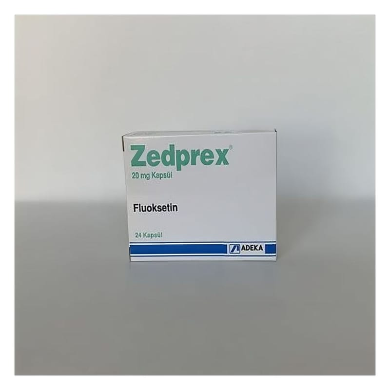

Zedprex 20 mg Kapsül, 24 Adet

Ne için kullanılır
KT · Bölüm 1ZEDPREX®kapsül, 16 kapsül, 24 kapsül veya 30 kapsüllük PVC/Al folyo blisterlerde karton kutuda sunulmaktadır.
ZEDPREX®seçici serotonin geri alım inhibitörü (SSRI) antidepresanlar olarak bilinen ilaç grubuna dahildir. Bu ilaç yetişkinlerde aşağıdakilerden herhangi birisini tedavi etmek için kullanılır: • Majör depresyon • Takıntı hastalığı (obsesif kompulsif bozukluk = OKB olarak da tanınır) • Aşırı yeme ve ardından kusarak çıkartma (bulimia nervoza) • Adet öncesi gerginlik (pre-menstrüel disforik bozukluk)
ZEDPREX®nasıl etki eder? Herkesin beyninde serotonin olarak adlandırılan bir madde bulunur. Depresyonda olan ya da obsesif kompulsif bozukluğu olan ya da yeme bozukluğu (bulimia nervoza) olan kişiler diğer insanlara göre daha düşük seviyede serotonine sahiptirler. ZEDPREX®ve diğer serotonin geri alım inhibitörlerinin nasıl etki ettikleri tam anlaşılmamakla birlikte bunlar beyinde azalmış olan serotonin seviyesini artırarak etki gösterirler. Bu durumların tedavisi daha iyi olabilmeniz için önemlidir. Eğer tedavi edilmezse, durumunuz düzelmez, daha ciddi ve tedavisi zor bir hale gelebilir.
Belirtilerden kurtulduğunuza emin olabilmeniz için birkaç hafta ya da birkaç ay boyunca tedavi edilmeniz gerekebilir.